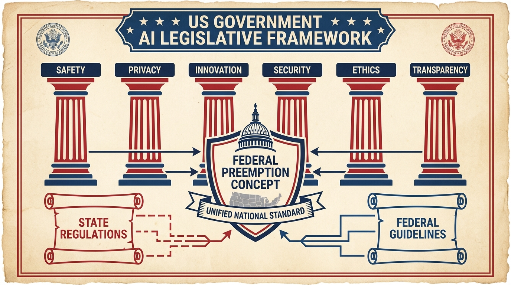

The Trump administration just dropped its long-awaited National AI Legislative Framework, and if you're an AI company, you're probably breathing a sigh of relief. If you're a state regulator, you might be reaching for the antacids.
The framework, unveiled on March 20, makes one thing crystal clear: the administration wants a unified national AI policy, not a "50-state patchwork" of regulations. That's code for federal preemption—meaning state AI laws would be superseded by federal standards.
The Six Pillars
The framework articulates six key objectives that will shape AI policy for years to come:
1. Protecting Children and Empowering Parents
The administration wants tools for parents to manage their children's digital environments, plus AI platform features that reduce risks like exploitation or self-harm. Reasonable enough on the surface, though the implementation details will matter enormously.
2. Safeguarding American Communities
Economic growth and energy independence take center stage here. The framework proposes streamlined permitting for data centers to generate power on-site—an acknowledgment that AI's energy demands are becoming a serious constraint on growth.
3. Respecting Intellectual Property
Here's where it gets spicy. The administration's position is that training AI models on copyrighted material generally does not violate copyright laws. That's a massive win for AI companies and a potential disaster for content creators. The framework essentially kicks the can to the courts, but the signal to industry is clear: keep training.

4. Preventing Censorship and Protecting Free Speech
The framework stresses defending free speech and ensuring AI systems aren't used to suppress lawful political expression. It also advocates for AI development free from "ideological bias"—a loaded term that will be fought over in courtrooms for years.
5. Educating Americans and Developing an AI-Ready Workforce
Congress is encouraged to advance workforce development and skills training. Translation: we know AI is going to disrupt jobs, and we're trying to get ahead of it. Whether these programs will actually work is another question entirely.
6. Enabling Innovation and Ensuring American Dominance
Remove barriers, accelerate deployment, facilitate access to testing environments. The subtext: we're in an AI arms race with China, and regulatory caution is a luxury we can't afford.
The Federal Preemption Question
The most consequential element of this framework is the push for federal preemption of state AI laws. States like California have been aggressive about AI regulation—think SB 1047 and various algorithmic accountability bills. The Trump administration wants to override all of that with a single federal standard.
This is a big deal for AI companies operating nationally. Compliance with 50 different state regimes is expensive and complex. A unified federal framework would simplify operations considerably. But it also means that progressive state regulations—stricter safety requirements, stronger privacy protections, more aggressive algorithmic accountability—would be wiped away.
The TRUMP AMERICA AI Act
Senator Marsha Blackburn introduced companion legislation—the TRUMP AMERICA AI Act—to codify the framework's priorities. There are some differences between the White House framework and Blackburn's bill, particularly around copyright and developer liability. Expect significant lobbying and negotiation before anything reaches the President's desk.
What This Means for AI Companies
If you're building AI systems, this framework is mostly good news. The emphasis on innovation over restriction, the federal preemption push, the hands-off approach to training data—all of this reduces regulatory risk.
But there are caveats. The framework leaves significant questions unanswered:
- What exactly constitutes "ideological bias" in AI systems?
- How will the copyright question actually be resolved?
- What safety requirements, if any, will be imposed on frontier models?
- How will the workforce development programs be funded and implemented?
The devil is in the details, and those details will be hammered out in congressional committees, regulatory agencies, and courtrooms over the next several years.
The Global Context
This framework needs to be understood in the context of global AI competition. The EU's AI Act takes a much more precautionary approach, with strict risk classifications and compliance requirements. China's AI regulations emphasize social stability and party control. The Trump administration is betting that American innovation—unleashed from excessive regulation—will win the race.
It's a high-stakes gamble. If the light-touch approach leads to breakthroughs that maintain American leadership, it'll be vindicated. If it leads to AI systems that cause serious harms—harms that stricter regulation might have prevented—the political backlash could be severe.
The framework is out. The fight over implementation is just beginning.